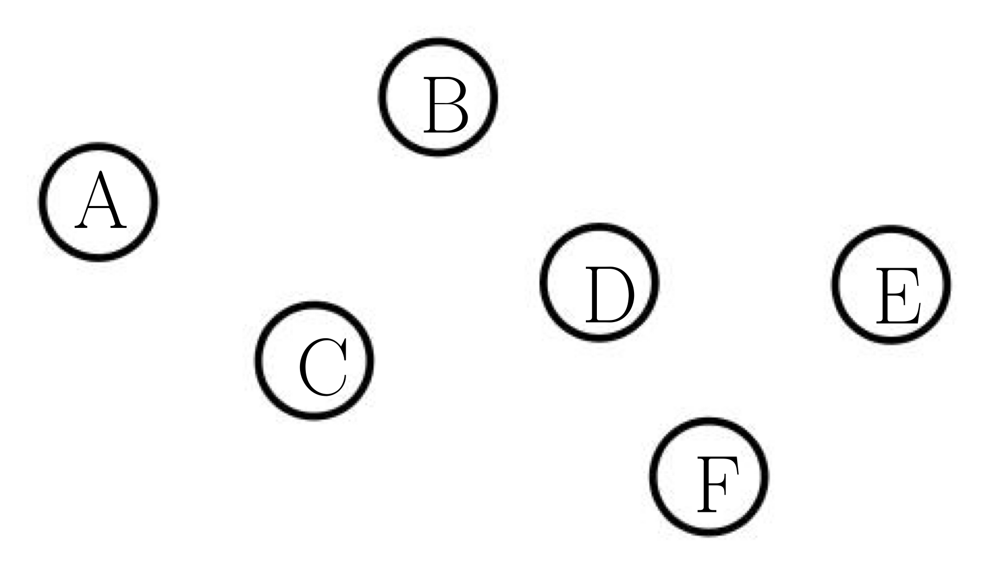
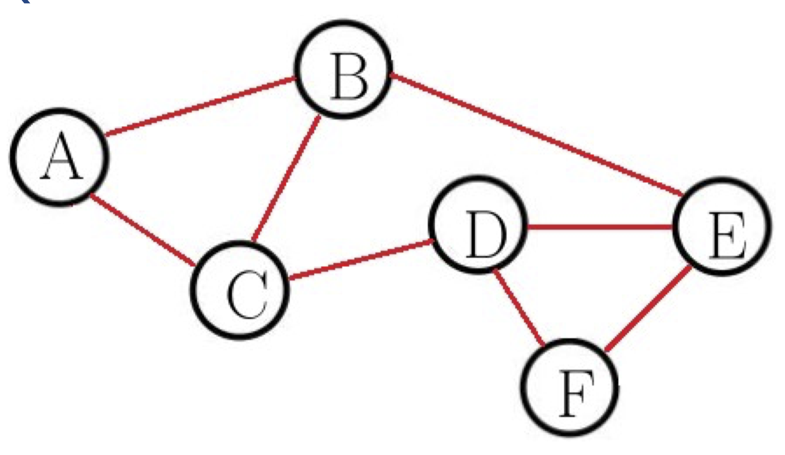
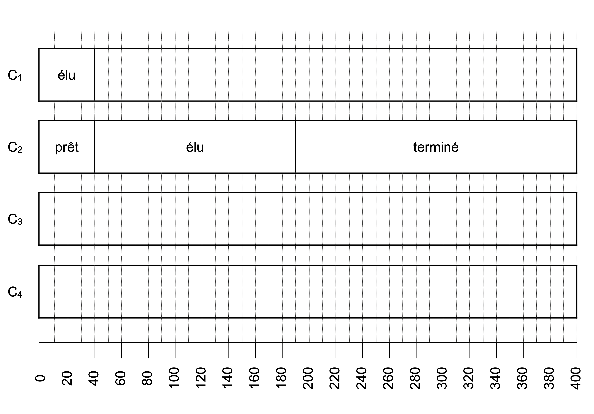
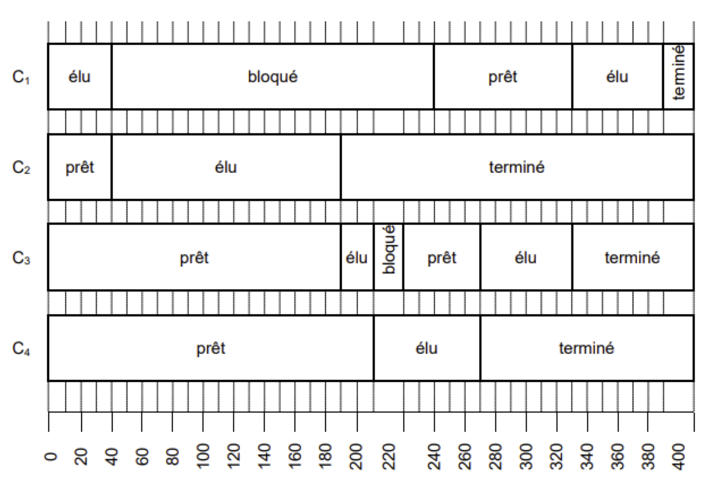

Exercice 1
Dans un bureau d’architectes, on dispose de certaines ressources qui ne peuvent pas être utilisées simultanément par plus d’un processus, comme l’imprimante, la table traçante, le modem. Chaque programme, lorsqu’il s’exécute, demande l’allocation des ressources qui lui sont nécessaires. Lorsqu’il a fini de s’exécuter, il libère ses ressources.
| Programme 1 | Programme 2 | Programme 3 |
|---|---|---|
| - demander (table traçante) - demander (modem) - exécution - libérer (modem) - libérer (table traçante) |
- demander (modem) - demander (imprimante) - exécution - libérer (imprimante) - libérer (modem) |
- demander (imprimante) - demander (table traçante) - exécution - libérer (table traçante) - libérer(imprimante) |
On appelle $p_1$, $p_2$ et $p_3$ les processus associés respectivement aux programmes 1, 2 et 3.
- Les processus s’exécutent de manière concurrente.
Justifier qu’une situation d’interblocage peut se produire.
Réponse
- Pour passer à l’état exécution, le processus p1 doit pouvoir accéder au modem alors que celui-ci est monopolisé par le processus p2. Il doit donc attendre que p2 libère le modem.
- Pour passer à l’état exécution, le processus p2 doit pouvoir accéder à l’imprimante alors que celle-ci est monopolisée par le processus p3. Il doit donc attendre que p3 libère l’imprimante.
- Pour passer à l’état exécution, le processus p3 doit pouvoir accéder à la table traçante alors que celle-ci est monopolisée par le processus p1. Il doit donc attendre que p1 libère la table traçante, ce qu’il ne fera pas car il est bloqué, dans l’attente d’un accès au modem.
La situation décrite constitue donc bien un interblocage.
- Modifier l’ordre des instructions du programme 3 pour qu’une telle situation ne puisse pas se produire. Aucune justification n’est attendue.
Réponse
Il faut que le processus p2 puisse achever sa tache et libérer le modem pour que p1 puisse s’executer. Comme p3 a aussi besoin de la table traçante, comme p1, il faut faire en sorte qu’il soit immédiatement bloqué sans monopoliser aucune ressource :
| Programme 3 |
|---|
| - demander (table traçante) - demander (imprimante) - exécution - libérer (table traçante) - libérer(imprimante) |
L’imprimante n’est alors plus bloquée par p3, ce qui permet à p2 de s’exécuter complètement et de libérer les ressources que p1 peut alors utiliser. Pour finir, une fois p1 terminé, p3 peut s’exécuter.
- Supposons que le processus $p_1$ demande la table traçante alors qu’elle est en cours d’utilisation par le processus $p_3$. Parmi les états suivants, quel sera l’état du processus $p_1$ tant que la table traçante n’est pas disponible :
a. élu
b. bloqué
c. prêt
d. terminé
Correction
Le processus sera bloqué.
Exercice 2
Un constructeur automobile utilise des ordinateurs pour la conception de ses véhicules. Ceux-ci sont munis d’un système d’exploitation ainsi que de nombreuses applications parmi lesquelles on peut citer :
- un logiciel de traitement de texte ;
- un tableur ;
- un logiciel de Conception Assistée par Ordinateur (CAO) ;
- un système de gestion de base de donnée (SGBD).
Chaque ordinateur est équipé des périphériques classiques : clavier, souris, écran et est relié à une imprimante réseau.
Ce constructeur automobile intègre à ses véhicules des systèmes embarqués, comme par exemple un système de guidage par satellites (GPS), un système de freinage antiblocage (ABS).
Ces dispositifs utilisent des systèmes sur puces (SoC : Système on a Chip).
- Citer deux avantages à utiliser ces systèmes sur puces plutôt qu’une architecture classique d’ordinateur.
Réponse
- Une grande partie de l’énergie est perdue lors des transferts des données entre les composants. Comme tous les composants d’un SoC sont connectés entre eux sur des distances très petites, et de manière interne sans câblage énergivore, les gains d’énergie sont très importants.
- La faible consommation énergétique implique aussi une très faible perte de chaleur qui évite de recourir à un ventilateur pour refroidir la puce. Les SoC sont donc silencieux.
- Le prix d’un système sur puce est très petit si on le compare à celui d’une carte mère rassemblant les mêmes composants (automatisation du processus de fabrication).
- Le circuit d’un SoC est conçu de manière globale, tant pour la partie hardware que pour celle des programmes intégrés dans les différents composants qui leur permettent d’assurer leurs fonctions. Cette vue d’ensemble du système, sans aucune possibilité d’ajouter ou changer les composants, est un avantage important pour garantir la sécurité du système.
Un ingénieur travaille sur son ordinateur et utilise les quatre applications citées au début de l’énoncé.
Pendant l’exécution de ces applications, des processus mobilisent des données et sont en attente d’autres données mobilisées par d’autres processus.
On donne ci-dessous un tableau indiquant à un instant précis l’état des processus en cours
d’exécution et dans lequel $D_1$, $D_2$, $D_3$, $D_4$ et $D_5$ sont des données.
La lettre $M$ signifie que la donnée est mobilisée par l’application ; la lettre $A$ signifie que l’application est en attente de cette donnée.
Lecture du tableau : le logiciel de traitement de texte mobilise $(M)$ la donnée $D_1$ et est en attente $(A)$ de la donnée $D_2$.
| $D_1$ | $D_2$ | $D_3$ | $D_4$ | $D_5$ | |
|---|---|---|---|---|---|
| Traitement de texte | M | A | - | - | - |
| Tableur | A | - | - | - | M |
| SGBD | - | M | A | A | - |
| CAO | - | - | A | M | A |
- Montrer que les applications s’attendent mutuellement.
Comment s’appelle cette situation ?
Réponse
Les application SGBD et CAO attendent mutuellement la Donnée $D_3$. Il y a donc un interblocage. $D_2$, $D_4$ et $D_5$ ne pourront pas être libérées. Le traitement de texte ne pourra obtenir $D_2$. Le tableur ne pourra obtenir $D_5$.
Ce constructeur automobile possède six sites de production qui échangent des documents entre eux. Les sites de production sont reliés entre eux par six routeurs $A$, $B$, $C$, $D$, $E$ et $F$.
On donne ci dessous les tables de routage des routeurs $A$ à $F$ obtenus avec le protocole RIP :
- Déterminer à l’aide de ces tables le chemin emprunté par un paquet de données envoyé du routeur $A$ vers le routeur $F$.
Réponse
$A \ce{->} B \ce{->} E \ce{->} F$.
On veut représenter schématiquement le réseau de routeurs à partir des tables de routage. Recopier sur la copie le schéma ci-dessous :
- En s’appuyant sur les tables de routage, tracer les liaisons entre les routeurs.
Correction
Exercice 3
Les états possibles d’un processus sont : prêt, élu, terminé et bloqué.
- Expliquer à quoi correspond l’état élu.
Réponse
Un processus dans l’état élu est un processus qui a accès au processeur. Il est donc en cours d’exécution.
- Proposer un schéma illustrant les passages entre les différents états.
Réponse
Cf. Cours.
On suppose que quatre processus $C_1$, $C_2$, $C_3$ et $C_4$ sont créés sur un ordinateur, et qu’aucun autre processus n’est lancé sur celui-ci, ni préalablement ni pendant l’exécution des quatre processus.
L’ordonnanceur, pour exécuter les différents processus prêts, les place dans une structure de données de type file. Un processus prêt est enfilé et un processus élu est défilé.
- Parmi les propositions suivantes, recopier celle qui décrit le fonctionnement des entrées/sorties dans une file :
- Premier entré, dernier sorti
- Premier entré, premier sorti
- Dernier entré, premier sorti
Réponse
Une file est une structure de données dans laquelle la donnée la plus ancienne sort la première. La réponse est donc : Premier entré, premier sorti.
On suppose que les quatre processus arrivent dans la file et y sont placés dans l’ordre $C_1$, $C_2$, $C_3$ et $C_4$.
- Les temps d’exécution totaux de $C_1$, $C_2$, $C_3$ et $C_4$ sont respectivement $\pu{100 ms}$, $\pu{150 ms}$, $\pu{80 ms}$ et $\pu{60 ms}$.
- Après $\pu{40 ms}$ d’exécution, le processus $C_1$ demande une opération d’écriture disque, opération qui dure $\pu{200 ms}$. Pendant cette opération d’écriture, le processus $C_1$ passe à l’état bloqué.
- Après $\pu{20 ms}$ d’exécution, le processus $C_3$ demande une opération d’écriture disque, opération qui dure $\pu{10 ms}$. Pendant cette opération d’écriture, le processus $C_3$ passe à l’état bloqué.
Sur la frise chronologique les états du processus $C_2$ sont donnés.
- Recopier la frise et la compléter avec les états des processus $C_1$, $C_3$ et $C_4$.
Réponse
On trouvera ci- dessous deux programmes rédigés en pseudo-code.
Verrouiller un fichier signifie que le programme demande un accès exclusif au fichier et l’obtient si le fichier est disponible.
| Programme 1 | Programme 2 |
|---|---|
| - Verrouiller fichier_1 - Calculs sur fichier_1 - Verrouiller fichier_2 - Calculs sur fichier_1 - Calculs sur fichier_2 - Calculs sur fichier_1 - Déverrouiller fichier_2 - Déverrouiller fichier_1 |
- Verrouiller fichier_2 - Verrouiller fichier_1 - Calculs sur fichier_1 - Calculs sur fichier_2 - Déverrouiller fichier_1 - Déverrouiller fichier_2 |
- En supposant que les processus correspondant à ces programmes s’exécutent simultanément (exécution concurrente), expliquer le problème qui peut être rencontré.
Réponse
- $P_1$ verrouille le fichier_1 et $P_2$ verrouille le fichier_2.
- $P_1$ attend le fichier_2 avant de pouvoir effectuer les calculs (et donc libérer le fichier_1).
- $P_2$ attend le fichier_1 avant de pouvoir effectuer les calculs (et donc libérer le fichier_2). Il existe donc une situation d’interblocage.
- Proposer une modification du programme 2 permettant d’éviter ce problème.
Réponse
Il faut inverser les 2 premières actions pour le programme 2 :
- Verrouiller fichier_1
- Verrouiller fichier_2